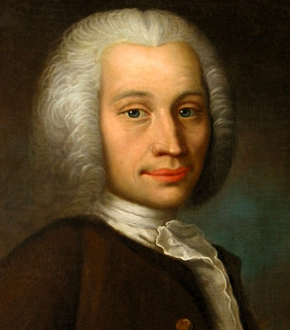
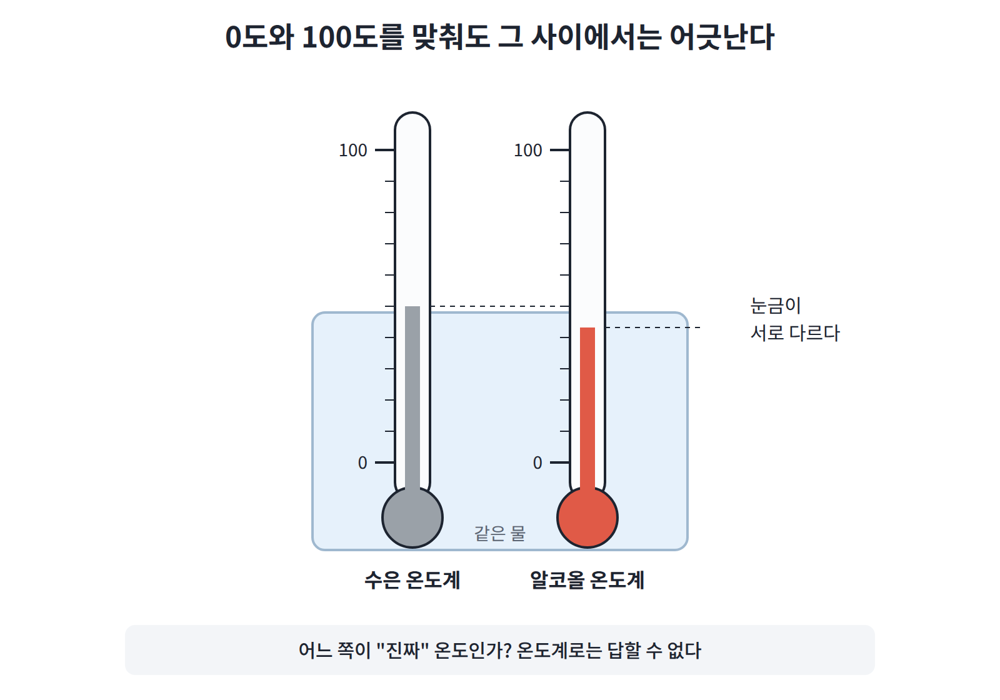
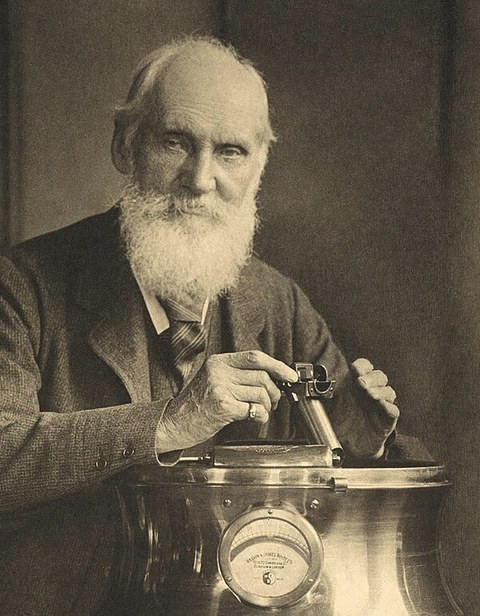
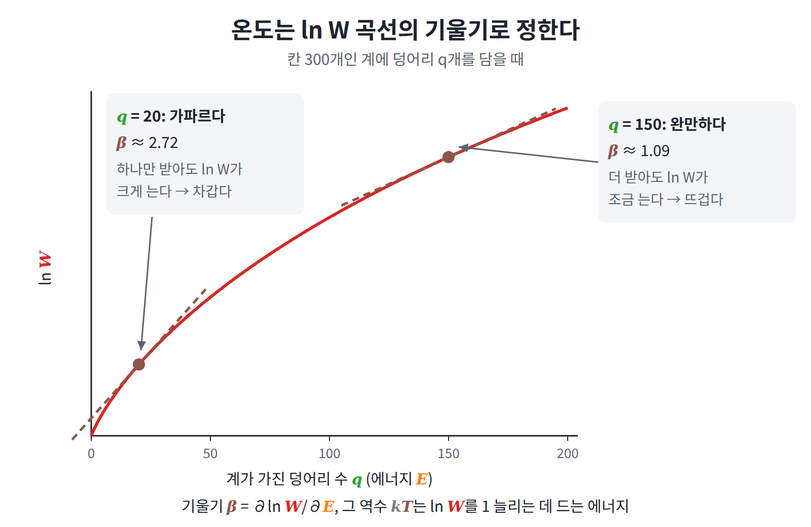
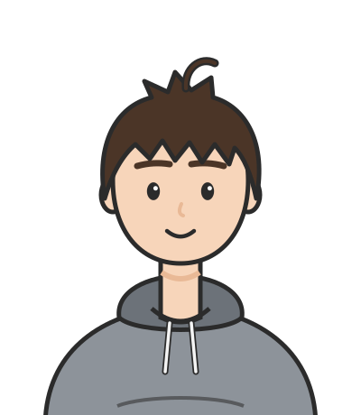

온도: 에너지와 경우의 수의 환율
평형에서 두 계가 반드시 같은 값을 갖는 양, 곧 ln W를 에너지로 미분한 기울기가 나왔다. 그런데 우리는 경험으로 "평형에서 같아지는 것"을 이미 하나 알고 있다. 바로 온도다. 그렇다면 온도계가 재는 온도는 정확히 무엇이었을까?
역사: 온도계는 있었지만 온도의 정의는 없었다
온도는 오랫동안 "온도계가 가리키는 값"으로만 정의되었고, 온도계가 정확히 무엇을 재고 있는지 설명할 수 있는 사람은 없었다. 그런데도 온도계는 만들어졌고 눈금도 정해졌다. 그 과정을 따라가 보면 무엇이 문제였는지가 드러난다.
18세기에 들어 파렌하이트는 수은 온도계와 그 눈금을 내놓았고(1720년대), 셀시우스는 1742년 물의 어는점과 끓는점 사이를 100칸으로 나누었다. 흥미롭게도 셀시우스의 원래 눈금은 끓는점이 0, 어는점이 100이었고, 지금처럼 뒤집힌 것은 그가 세상을 떠난 뒤의 일이다.

눈금이 정해지자 곧 곤란한 문제가 드러났다. 수은 온도계와 알코올 온도계를 0도와 100도에 똑같이 맞춰 두어도, 그 사이 온도에서는 두 온도계가 조금씩 다른 값을 가리켰던 것이다. 두 액체가 온도에 따라 늘어나는 비율이 일정하지 않기 때문인데, 그렇다면 어느 쪽이 “진짜” 온도인가? 온도를 온도계로 정의하는 한 이 질문에는 답이 없다.

켈빈은 1848년 이 문제를 피하기 위해 특정 물질에 기대지 않는 온도 눈금을 제안했다. 그는 카르노의 열기관 효율을 이용해 온도를 정의했고, 이것이 오늘날 쓰는 켈빈(K) 눈금이 되었다. 다만 이 정의도 "가상의 열기관"이라는 장치를 거쳐야만 온도에 닿는다는 점에서, 온도 자체가 무엇인지에 대한 답은 아니었다.

온도계가 쓸모 있는 이유도 한번 따져 볼 만하다. 물체 A가 C와 열평형이고 B도 C와 열평형이면, A와 B도 서로 열평형이다. 이 사실 덕분에 온도계 C 하나로 서로 떨어져 있는 두 물체를 비교할 수 있다. 너무 당연해 보여서 제1법칙과 제2법칙보다 늦은 1930년대에야 이름이 붙었는데, 그 둘보다 더 기본적이라는 뜻에서 영번째 법칙이라 불리게 되었다.
그렇다면 온도계도 열기관도 없이, 물체 안에서 에너지가 나뉘는 방식만 보고 온도를 정할 수는 없을까? 앞 절에서 평형에서 같아지는 기울기를 얻었으니, 이제 그것으로 온도를 정의해 보자.
정의: 기울기와 그 역수
평형에서 같아지는 그 기울기에 이제 이름을 붙이자. 로그 경우의 수를 에너지로 미분한 값을 역온도 β (경우의 수 증가율, inverse temperature)라 하고, 그 역수를 온도 T (에너지와 경우의 수의 환율, temperature)라 한다.
β는 에너지를 조금 더 넣었을 때 ln W가 늘어나는 비율이므로, 그 역수인 kT는 "경우의 수를 e배로 늘리는 데 드는 에너지"라고 읽을 수 있다. 에너지를 경우의 수로 바꾸는 환율인 셈이다. 이때 부피와 입자 수는 고정한 채로 미분하므로, 고정한 것을 밝혀 쓰면 1/T = (∂S/∂E)_{V,N}이다.

물론 이름을 붙였다고 해서 이 양이 온도계가 재는 온도와 같은 것이 되지는 않는다. 같다고 믿을 만한 근거가 있어야 하는데, 첫 번째 근거는 온도계가 쓸모 있는 이유, 곧 영번째 법칙이다.
영번째 법칙이 정의에서 나온다
두 계가 평형에 이르면 β가 같아진다는 것은 앞 절에서 이미 보았다. 더구나 "같다"는 관계는 이행적이어서, A와 C의 β가 같고 B와 C의 β가 같으면 A와 B의 β도 같다. 영번째 법칙을 따로 가정할 필요 없이 정의에서 바로 얻는 것이다.
kT는 얼마나 큰가
환율이 얼마인지 실제 숫자로 확인해 두면 감을 잡기 쉽다.
| 값 | 실온(300K)에서 |
|---|---|
| kT (분자 하나) | 약 4.1 × 10⁻²¹ J |
| kT (전자볼트) | 약 0.026 eV |
| kT × 아보가드로수 (1몰) | 약 2.5 kJ/mol |
탄소와 탄소의 결합을 끊는 데는 대략 350 kJ/mol이 드는데, 이는 실온 kT의 약 140배다. 실온에서 플라스틱이 저절로 분해되지 않는 것은 이 때문이다. 이처럼 어떤 변화가 열만으로 저절로 일어날 수 있는지는, 그 변화에 필요한 에너지가 kT의 몇 배인지를 보고 가늠한다.
열의 방향: 에너지는 β가 작은 쪽에서 큰 쪽으로
영번째 법칙은 온도의 정의에서 바로 나왔다. 그렇다면 온도에 얽힌 또 하나의 오래된 경험, 곧 열은 뜨거운 쪽에서 차가운 쪽으로만 흐른다는 사실도 이 정의에서 나올까? 그리고 엔트로피를 처음 정의할 때 클라우지우스가 열 Q를 하필 온도 T로 나눈 이유도 여기서 설명될까?
평형이 아닌 두 계 A, B 사이에서 에너지 δE가 A에서 B로 간다고 하면, 전체 로그 경우의 수는 다음만큼 변한다.
실제로 일어나는 것은 경우의 수가 늘어나는 변화이므로, 에너지는 β_B > β_A일 때에만 A에서 B로 간다. 다시 말해 에너지는 β가 작은 쪽, 곧 온도가 높은 쪽에서 β가 큰 쪽, 곧 온도가 낮은 쪽으로 흐른다. "열은 뜨거운 곳에서 차가운 곳으로 흐른다"는 오래된 경험 법칙이 경우의 수를 세는 일에서 나온 것이다.
클라우지우스가 Q를 T로 나눈 이유
이번에는 열역학의 측정값과 맞춰 보자. 어떤 계가 부피를 바꾸지 않은 채 열 Q를 조금 받으면 그 에너지가 Q만큼 늘어나므로, 엔트로피는 다음만큼 늘어난다.
클라우지우스가 열기관의 측정으로 찾아낸 Q/T라는 양이, 로그 경우의 수를 에너지로 미분한 값이 온도의 역수라는 정의에서 정확히 나오는 것이다. 예를 들어 400K 물체에서 300K 물체로 열 1000J이 가면 엔트로피는 −1000/400 + 1000/300 ≈ +0.83 J/K만큼 늘어나는데, 이는 앞의 계산을 에너지 단위로 쓴 것과 같다.
문제 2. 열은 어느 쪽으로 가나
두 계의 역온도가 β_A = 2, β_B = 0.5 (단위: 1/에너지 단위)이다. 맞닿게 하면 에너지는 어느 쪽으로 가는가?

β가 큰 A가 더 뜨겁죠. A에서 B로 가요.
β가 무엇의 역수였죠?

온도요. 아, β가 크면 온도가 낮아요. T_A = 0.5, T_B = 2. B가 뜨겁네요.

결론만 외우지 말고 경우의 수로 확인해 봐요. B에서 A로 에너지 δ가 가면 ln W는?

A는 2δ 늘고 B는 0.5δ 줄어요. 전체로 +1.5δ. 경우의 수가 늘어나니까 B에서 A로 가요.

맞아요. β는 "에너지를 얼마나 반기는가"예요. 많이 반기는 쪽이 차가운 쪽이고, 에너지는 그쪽으로 가요.

그럼 에너지는 두 계의 에너지가 같아질 때까지 가겠네요.
40도 물이 200리터 든 욕조에 80도 커피 한 컵을 넣으면요? 에너지는 욕조가 비교도 안 되게 많아요.
그래도 열은 커피에서 욕조로 가죠. 에너지가 같아지는 게 아니라 β가 같아질 때까지군요. 덩어리 문제에서 60 : 40이 나온 것도 같은 얘기고요.